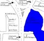

De: La Frikipedia, la enciclopedia extremadamente seria.
De: La Frikipedia, la enciclopedia extremadamente seria. De: La Frikipedia, la enciclopedia extremadamente seria.
| Imperio del Cruce Ribesalbes | |||||
| |||||
| Lema: Si el valor de x rechazable es mayor a 4 veces el error absoluto, x rechazable se rechaza, valga la redundancia | |||||
| Himno: Viva el Imperio
a la mierda los demás a la mierda los demás a la mierda los demás viva el Imperio | |||||
| 
| |||||
| Capital | Casetaltato | ||||
| Mayor ciudad | Casetalmallén | ||||
| Lenguas oficiales | tatinio, ribesalbeño, castenallo, catalán/valenciano/balear | ||||
| Lenguas no oficiales | balensiano/xurro/mariabradeleño, afrikaans | ||||
| Religiones no oficiales | Religión Oficial del Imperio, Cristianismo 2, Budú | ||||
| Gobierno | Imperio tatinio | ||||
| | |||||
| Área | moltes fanecaes | ||||
| Población | entre 1 y +infinito | ||||
| Moneda | Tatín | ||||
| Zona horaria | GMT+0:40 | ||||
| Dominio Internet | .tk | ||||
| Código telefónico | 555-CRUCE
| ||||
| | |||||
Imperio nacido en la confluencia de tres importantes vías de comunicacíon, su objetivo siempre fue la dominación de dicha confluencia y la expansión de su poder por el mundo, pero dicha tarea siempre ha sido obstaculizada por infinidad de contratiempos, tales como golpes de Estado o la hora de la siesta.
La historia del Imperio se remonta a varios siglos atrás, y esta marcada por toda una serie de conflictos, luchas y guerras entre todas las tribus que habitaban los territorios que hoy conforman el Imperio. Pero en un momento dado surgió un líder, el Tato, que, autoproclamándose emperador, consiguió unificar (o eso dice él) a todas tribus para la ¿consecución de un objetivo común? que ha hecho que el Imperio sea el ¿gran país? que es hoy en día.
Los inicios fueron turbulentos. Aprovechando el vacío de poder existente, el Capayo, Ferran, Pepe... y SPiNoZA (este último hizo campaña con patinete. Los resultados de la misma fueron más bien escasos). En esta campaña no se unió Carlos, pero aun así se dejaba caer por allí.
Reunidos todos los adeptos al imperialismo en Casetaltato, se acordó el siguiente orden social para el nuevo estado: el Tato haría las funciones de emperador absoluto, el resto de gente haría de pueblo llano. En esa reunión todos se mostraron de acuerdo en acordar que tenían que ponerse de acuerdo en determinar unas determinadas iniciativas políticas y sociales que fueran fruto del mutuo acuerdo de todos (TRADUCCIÓN: bueno, tendremos que hacer algo, ¿No?).
El primero en tomar la iniciativa fue Safont. Su primer proyecto fue traer el mar hasta el imperio. Naturalmente todo eso mediante el desarrollo de unas faraónicas infraestructuras (el imperio dista unos 21 kilometrillos del mar). Para tal fin, Safont fue nombrado ministro de obras públicas. Pero pronto se alzaron las voces críticas al proyecto. "¿Para que necesitamos hacer todo eso?"... Después de esa pregunta Safont se encogió de hombros y dijo "¿Para tener pesca? Así tendremos para comer". Por lo que después de esto, de su preocupación por nuestro sustento, Safont fue nombrado ministro de agricultura, pesca y ganadería. Pero pronto se volvieron a alzar las voces críticas "pero para poder alimentarnos no hace falta traer el mar hasta aquí, se pueden hacer otras cosas...". Pero lejos de dejar sin argumentos a Safont, éste dijo "Pero con el mar aquí podríamos atraer muchos visitantes". Safont fue nombrado ministro de turismo. "Bueno, pero suponiendo que hagamos ese proyecto, nos va a hacer falta mucho personal cualificado, nos van a hacer falta ingenieros, arquitectos, técnicos... y hoy por hoy no tenemos nada de eso, las gentes de aquí no han recibido la educación necesaria...". Safont fue nombrado ministro de educación, cultura y ciencia.
Una vez consolidada la iniciativa de traer el mar hasta el Imperio (no existe forma humana posible de rebatir la aplastante lógica de Safont), hicimos un brainstorming en busca de nuevas ideas. Esta vez había que buscar algo que diera poder al Imperio (poder adquisitivo, se entiende) y gran influencia sobre los demás. La primera idea fue, como no, de Safont. "Ya esta, cortamos todas las vías de comunicación que confluyen en el cruce y quien no pague no pasa". Pero la voz crítica surgió de nuevo (desde luego es que hay quien no aprende...) "Muy bien, sí, conseguiríamos muchos ingresos y tal, pero... eso no le va a sentar nada bien a los países vecinos, Melocotonia y Krustyfistan se nos van a hechar al cuello". Safont, una vez mas, aportó sólidos argumentos para defender sus ideales... "¿Pero qué dices, imbécil? Tú no tienes ni puta idea". "Si, pues si luego hay algún problema yo no quiero saber nada, ya te apañarás tu con ellos". "Pues vale, pues ya me apañaré yo". "Pos bueno". "Rebota y rebota y en tu culo explota". "Y en tu culo un futbolín"... ... UNA HORA MÁS TARDE Safont fue nombrado ministro de asuntos exteriores.
Ante la evidente acaparación de poder de Safont, se decidió tomar medidas de carácter retroactivo de implantación recíproca. Se nombró a Capayo presidente del gobierno. Los cargos de capitán general del ejército y de director general de los servicios de inteligencia se sortearon a cara o cruz entre Pepe y SPiNoZA. Entonces Marc saltó "Yo quiero ser ministro de fomento, yo quiero ser ministro de fomento, yo quiero ser ministro de fomento...", "¿Y que es lo que hace un ministro de fomento?", "Fomentar", "¿Fomentar qué?", "Fomentar cosas", "¿Pero qué cosas?", "Las cosas que hace falta fomentar", "No, ahora en serio, ¿Que es lo que hace un ministro de fomento?", "Fomentar"... HORA Y MEDIA MÁS TARDE Marc fue nombrado ministro de fomento. A Raúl y a Ferran se los dejaron calentando en el banquillo, preparándose para entrar en acción en el momento en que Safont quisiera acaparar nuevos cargos.
Y con este reparto de poderes, el Imperio del Cruce Ribesalbes empezó a funcionar. Sin embargo, esta organización contaba con un gran defecto de base... ¿La alarmante concentración de poder de Safont? ¿Pero qué dices, tío? No hombre no. El problema era más bien que Capayo le caía mal a todo el Imperio (¿Y como alguien así puede llegar a presidente? Qué sabe uno de por qué hace las cosas...). Caía tan mal que todos los ministros tramaron en secreto un golpe de Estado contra el Imperio, para acabar con el orden establecido y echar a Capayo de paso. Agentes de los recientemente creados servicios de inteligencia informaron de esta situación a su gracioso emperador el Capayo (cuando alguien cae mal, cae mal, no se puede hacer nada) de los dominios imperiales, colocando a Raúl como nuevo presidente del gobierno. De esta forma nació el Nuevo Imperio del Cruce Ribesalbes, que por comodidad pasó a llamarse sólo Imperio del Cruce Ribesalbes.
Una vez superada esta crisis de gobierno, todos se pusieron manos a la obra. Safont inició sus proyectos, Pepe empezó a organizar los servicios de inteligencia, SPiNoZA empezó a organizar el ejército, Carlos, que hasta entonces no había hecho nada, siguió sin hacer nada, el Tato empezó a hacer como que hacia algo y Marc... bueeeno, todos queremos a Marc. Raúl hizo lo segundo que suelen hacer los nuevos presidentes cuando llegan al poder (lo primero es subirse el sueldo), irse de viaje oficial. Como Ferran aun no hacia nada, le acompañó haciendo las veces de secretaria. Los dos se fueron a las lejanas tierras de Alcudia y de Sueras a promocionar el Imperio y conseguir nuevos aliados internacionales... Y nunca más se volvió a saber de ellos. "Nos dijeron que llamarían cuando llegaran y aun lo estamos esperando. Dicen que no news is good news, pero ha pasado tanto tiempo que ya no se que pensar..." comenta apenado el Tato. Se cree que Raúl y Ferran no murieron, que en un futuro bajarán de las montañas y entonces llevarán al Imperio hasta la victoria (siempre).
Después de todo esto, Safont, una persona con iniciativa, amante del riesgo, comprobó que la tarea de ser ministro de obras públicas, agricultura, pesca, ganadería, turismo, educación, cultura, ciencia y asuntos exteriores no suponía un reto para él, no se sentía motivado. Así que lo dejó todo e hizo lo que cualquier persona en su situación habría hecho: ponerse a estudiar ciclo de grado medio administrativo. Pero eso tampoco supuso un reto para él y decidió abandonarlo también. Es a partir de aquí cuando a Safont se le pierde de vista para siempre. Nunca jamás se volvió a saber de él, aunque algunos creen que al final logró realizar su sueño de abrir una Panadería De Carne.
Tras el anterior período marcado por la inestabilidad, vino un período marcado por la paz, la seriedad, la prosperidad, y la estabilidad. Este período es conocido como la Pax Tatinia, y es el período de máximo esplendor del Imperio. Francamente, fueron tres días inolvidables.
Todo empezó cuando todos los miembros del gobierno firmaron el acta fundacional del Imperio del Cruce Ribesalbes, carta magna donde se recogen todos los deberes y los derechos de los ciudadanos del Imperio. Con este acta, el reparto de poder quedó de la siguiente forma: el Tato (emperador absoluto) se encargaría de las tareas de gobierno, SPiNoZA (capitán general del ejército) y Pepe (Director general de los servicios de inteligencia) se encargarían de mantener la seguridad y el orden imperial establecido y Marc (ministro de fomento) se encargaría de... ¿fomentar?.
En este período se establecieron las simbologías imperiales. Se dotó al imperio de escudo, bandera e himno imperial. Para el escudo se contó con las propuestas de Pepe, Marc y Ferran (que des-desapareció para entregar su propuesta de escudo y luego volvió a desaparecer). Pero al final se acabó implantando el escudo actual por que al Tato le salió de los huevos por su simplicidad. Tanto la bandera como el himno fueron el resultado de un impromptu poético que tuvo el Tato.
El Imperio amplió de forma notoria su área de influencia, llegando hasta las tierras de Loscamposdelacajarural y hasta las mismísimas puertas de HOnda.
Se estableció como moneda oficial del Imperio el Tatín, y se acuñaron los primeros Tatines.
El proyecto de Safont de traer el mar hasta el cruce se convirtió en uno de los proyectos insignia del Imperio. El proyecto de cortar las vías que convergen en el cruce y establecer un peaje se abandonó al comprobar la vihabilidad de que los enemigos del Imperio construjeran una vía de circunvalación rodeando todo el cruce.
Se consiguió una formación de gobierno estable, con unos objetivos sólidos y fuertes que integraron a la totalidad del Imperio.
SPiNoZA, no se sabe si porque estaba en contra de la ideología imperialista tatinia, o por afán de tocar los pendientes reales, se opuso al Imperio como tal, rechazando toda simbología imperial y proponiendo nuevas formas de Estado. Dos de ellas cobraron fuerza entre los subversivos (SPiNoZA, básicamente).
Una de esas corrientes de pensamiento fue el mierdismo, que defendía la reconversión del Imperio al MIERDA (Minúsculo e Insignificante Estado Republicano Democráticamente Anárquico). El mierdismo, como su propio nombre parecía indicar, acabó lléndose a la puta mierda, no sin salpicar de lleno hacia FUERA.
La otra corriente, que bebió de las fuentes de MIERDA, fue/era FUERA (Federación Unida En Rebelión Antitato), que recibió del mierdismo su objetivo de mandar al Tato a la mierda. Aparte de eso, no compartía ningún otro de sus prepucios ideológicos.
No se sabe con certeza si fue FUERA o mie MIERDA, o los dos, o ninguno, que lo mismo da, pero un ejército de guaerrilla compuesto por todos los efectivos de las Fuerzas Armadas Imperiales (es decir, MIERDA y FUERA) se dirigió hacia Casetaltato con la intención de tomar el palacio imperial y enviar a pastar al Tato. A la llegada del ejército a Casetaltato, el emperador les soltó a los perros (callejeros) que malvivían en la capital. Los perros, muertos de jambre, pincharon las ruedas de los tanques obligando a los sublevados a abortar su atanque y a retirarse deshonrosamente con el rabo entre las piernas (o algo asín, ya se sabe que las batallas las cuentan los vencedores).
Después de que el MIERDA y la FUERA se fueran a la mierda, su gracioso emperador el Tato pidió explicaciones al cabecilla golpista SPiNoZA, con la intención de destituirle por alta traición y mal gusto vistiendo. SPiNoZA alegó en su defensa que todo había sido una broma. Tato reaccionó diciendo "¡Ah, vale!" y se fue. Cuando estaba saliendo por la puerta, se volvió diciendo "Un momento... ¡Esa explicación es una puta
mierda! ¡Exijo una explicación más plausible o una pizza barbacoa familiar! ¡Y con pepinillos, que quitaré porque no me gustan!". SPiNoZA, que no se esperaba que colara lo de la broma, empezó a rayarle la cabeza exponiendo que el rebelado había sido un simulacro, que era para poner a prueba las defensas del Imperio, que asín hoy éramos más fuertes que ayer, que lo hacía por el bien del Imperio, que cuando fuera mayor ya lo entendería, que debía estar agradecido, que le debía una, que gente como él ya no quedaba... El Tato, sólo para que se callara, y antes de que SPiNoZA le pidiera que se corriera con los gastos del ataque contra el Imperio, respondió "Bueno, bueno, vale. Vés-te". Y ya. SPiNoZA siguió como Capitán General de las FAI (Fuerzas Armadas Imperiales) como si nada hubiera pasado, y la calma retornó a las hexóticas tierras imperiales.
Una vez pacificado de nuevo el Imperio, nuevamente vino gente a joder la marrana perturbar la estabilidad imperial. Esta vez se trataba de Mallén, que siguiendo postulados filldeputistas, conquistó zonas en los confines del Imperio, haciéndose fuerte en la ciudad actualmente conocida como Casetalmallén.
La principal actividad económica del Imperio es el trapicheo financiero con el Tatín, aprovechando las ventajas fiscales que reporta el uso de esta moneda. Actualmente este sector esta en crisis, ya que desde la creación del Imperio nadie (pero nadie nadie) se ha mostrado interesado en adquirir moneda del Imperio.
Un caluroso dia del verano del 2002, altos dignatarios imperiales tuvieron el "placer" de "comer" en dicho "restaurante". No se sabe con certeza si lo que allí les ocurrió era la tónica general del "restaurante" o si es que se cebaron con ellos a posta porque les vieron cara de tontos, nadie ha vuelto para comprobarlo. El Bohio se ha ganado a pulso esta enemistad eterna por:
Los orígenes de esta enemistad se remontan hacia el 2001, cuando su gracioso emperador el Tato (incauto donde los haya) accedió a prestarle al Lusa cierta cantidad de dinero, pensando que esta sería devuelta. Hasta la fecha de hoy, la deuda sigue tan vigente como el primer día.
Coincidiendo con el primer aniversario de dicha deuda, el Lusa y el Tato se fueron juntos de fiesta para conmemorar este hecho tan singular, creando de este modo una tradición que se viene cumpliendo año tras año, convirtiendo así este acto de traición entre amigos en motivo de regocijo popular. Desde entonces, esta deuda es conocida como LA deuda.
De este modo se crea la paradoja del Lusa por la que Lusa siempre será enemigo imperial, porque no puede saldar LA deuda, porque si saldara LA deuda, no se podrían conmemorar los aniversarios de LA deuda y por lo tanto el Lusa y el Tato no se podrían ir juntos de fiesta como buenos amigos que son.
No ha habido reconocimiento diplomático hacia el Imperio del Cruce Ribesalbes por parte de ningún país miembro de la ONU. A pesar de esto, el Tato sostuvo un encuentro con el embajador de la estupidez en Almassora.
No han reconocido el Imperio del Cruce Ribesalbes, pero tampoco han emitido ningún comunicado oficial rechazándolo, tildándolo de broma o frivolidad, o advirtiendo a su gente de la posibilidad de estafas sobre él:
...SPiNoZA es Lesbiano?
Autor(es):